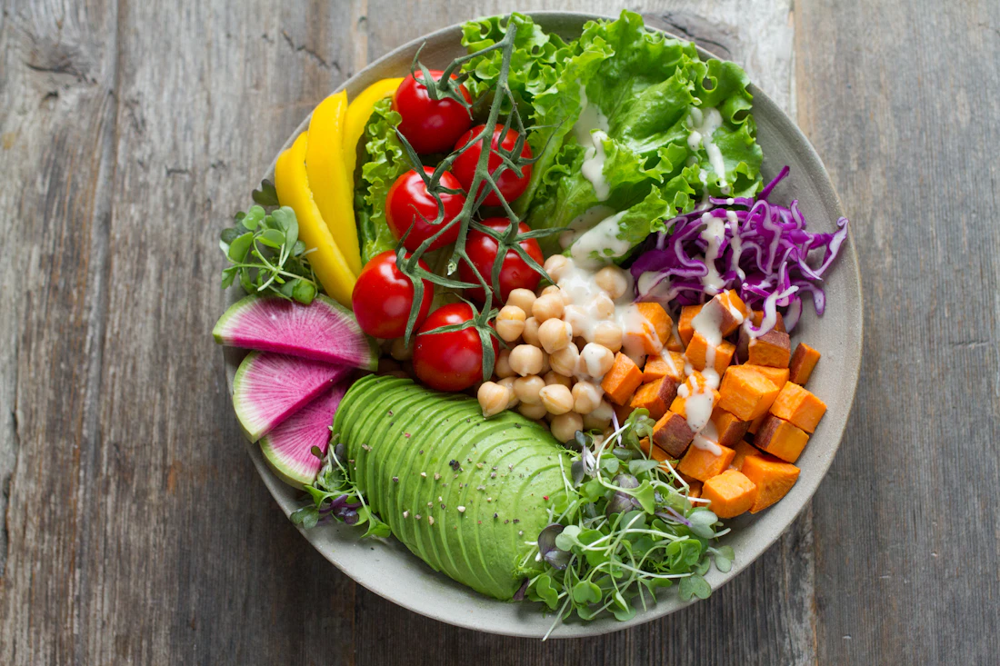

5 Blackened Tenders
5 tenders, biscuit, sauce and drink excluded · U.S. menu
- Calories
- 280
- Protein
- 47 g
- Carbs
- 4 g
- Fat
- 9 g
Five blackened tenders, without sides or sauces. High in protein, with 1,430 mg sodium.
Find fast-food meals by calories and protein.
Use a few questions or go straight to the meals.
5 tenders, biscuit, sauce and drink excluded · U.S. menu
Five blackened tenders, without sides or sauces. High in protein, with 1,430 mg sodium.
1 listed order · U.S. menu
30 grilled nuggets, medium waffle fries and a large fruit cup: 510 + 420 + 120 calories. No extra sauce or drink.
1 listed order · U.S. menu
Two six-inch servings of the Fresh Fit recipe. Subway instructs doubling its six-inch values for a footlong.
Listed ingredient build: 1 × 4 oz chicken, 0.5 × 4 oz brown rice, 1 × 4 oz black beans, 1 × 2 oz fajita vegetables, 1 × 4 oz corn salsa, 1 × 4 oz tomato salsa, 1 × 1 oz romaine · U.S. menu
Adobo chicken, light brown rice, black beans, fajita vegetables, corn salsa, tomato salsa and romaine. Carbs and sodium are calculated from Chipotle's published ingredient values.
U.S. menu data. Portions, sauces and local recipes may change the numbers. About our data

Estimate calories, protein, carbs and fat for your goal.
Use the free macro calculatorCompare two food labels